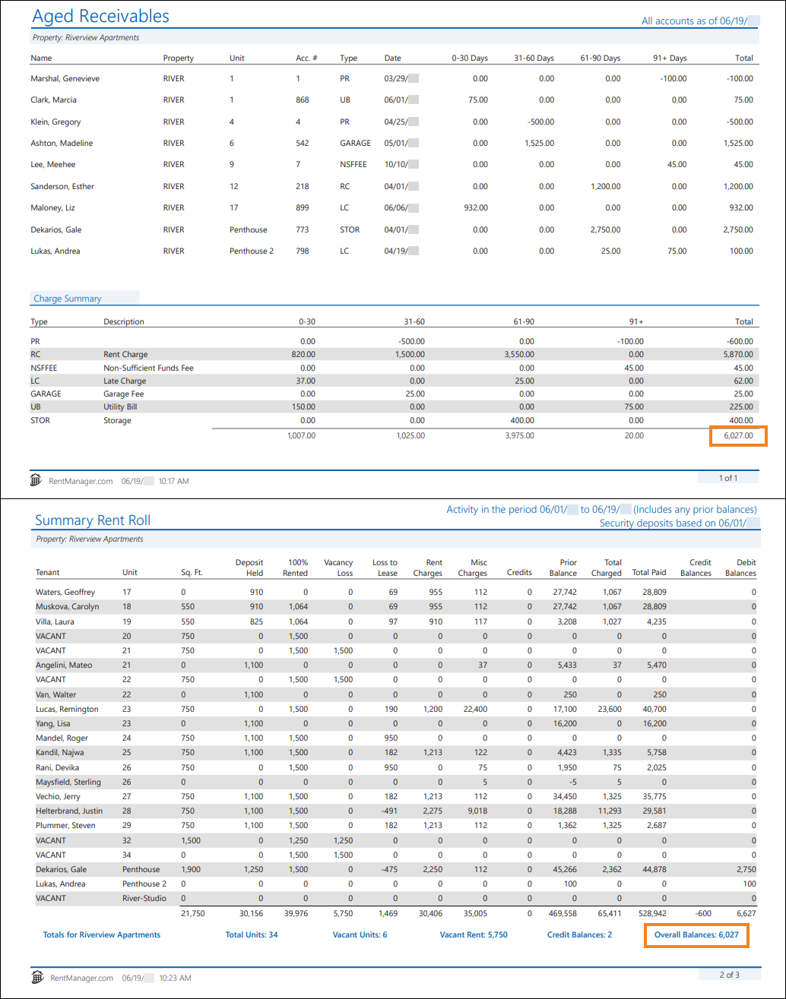
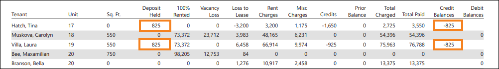
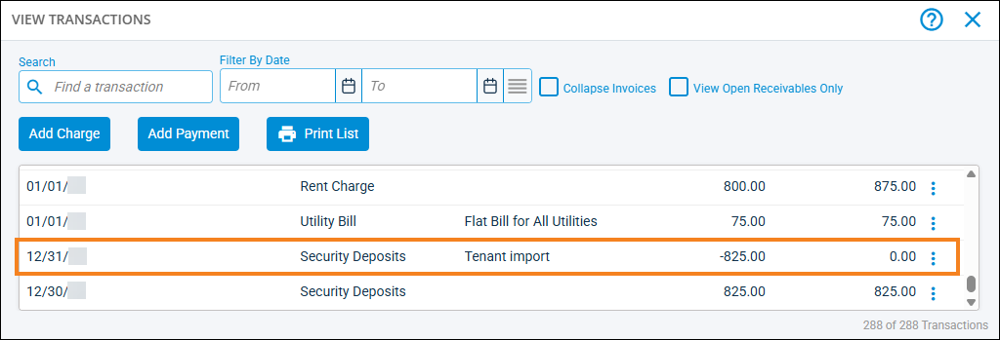

Source: https://rmxhelp.rentmanager.com/Topics/Express/KB/Report-Summary-Rent-Roll-Aged-Receivables.htm
Summary Rent Roll and Aged Receivables
Both the Summary Rent Roll and Aged Receivables reports provide tenant balances. The Summary Rent Roll focuses on transaction activity that occurred over a specified period of time and breaks down the different types of transactions, while the Aged Receivables report provides information on charges that are still open as of a specified date.
Warning
The information contained here does not replace the advice of an accountant. If you are unclear about how to interpret the data presented in the related reports, please consult your accountant.
The Summary Rent Roll report tracks transaction activity on tenant accounts over a specified period of time. You can examine held security deposits for each of these tenants, as well as vacancy loss and loss to lease totals. This report also provides a breakdown of totals for rent and non-rent charges, credits, prior balances, charges, payments, and credit and debit balances and is a good report to provide to your bank when they request to view your income.
The Aged Receivables report displays open charge information for tenants, prospects, and owners as of the selected date. The report categorizes open charges based on whether they are 0–30 days, 31–60, 61–90, or 90+ days past their creation date to help you track delinquency.
Related Privileges
| Group | Privilege | Column |
|---|---|---|
| Letter/Email Templates/Reports/Packets | Run reports | Enabled |
Additionally, on the Reports tab, you must have access to Summary Rent Roll and Aged Receivables.
For more information, refer to Control User Access.
When run with comparable report options, the Summary Rent Roll report's Overall Balance field matches the Aged Receivable report's Total column.

Report Options
To populate Summary Rent Roll and Aged Receivables reports that complement each other, use the report option combinations listed in the table below. Report options not mentioned do not affect comparability and can be left on their default setting.
| Summary Rent Roll | Aged Receivables | Description |
|---|---|---|
|
Properties/Owners to Include |
Properties to Include |
The same properties or property group must be selected for both reports. If the Owners tab is selected for the Summary Rent Roll, then on the Aged Receivables report, select the properties of those selected owners. |
|
Date Range |
As of Date |
On the Summary Rent Roll, set the From field as the date on which you wish to begin examining transactions. Generally, you can set this field to the beginning of the current month. For the To field and the Aged Receivables report's As of Date field, select the same date. |
|
Report Method |
n/a |
The Activity and prior balances option must be selected. More Information Selecting either of the other options could cause discrepancies between the reports because the Summary Rent Roll examines all tenants that occupied a unit at any point during the reporting period, while the Aged Receivables report examines only tenants that occupied the unit as of the report date. Additionally, the Aged Receivables report includes all tenants with an account balance, regardless of whether or not there was transaction activity during the reporting period. |
|
n/a |
Charges to Include |
All charge types in the list must be selected. The Summary Rent Roll includes all charges by default. |
|
n/a |
Accounts to Include |
The All option must be selected. |
|
n/a |
Include accounts with a balance greater than or equal to |
This option must be unchecked because the Summary Rent Roll does not provide an option to differentiate between delinquent amounts. |
|
n/a |
Show Credits |
This option must be checked because the Summary Rent Roll automatically includes applied and unapplied negative charges. |
Troubleshooting Total Balances that are Different
While running the reports with the suggested report options above allows the reports to examine the same data, there are other factors that can cause discrepancies between these value totals.
More Information
When troubleshooting, it is recommended that for the Aged Receivables report, you set the Detail or Summary report option to Detail to see each individual charge and credit for each tenant. This makes it easier to pinpoint specific matching transaction amounts between the two reports.
Leases and Transactions not tied to a Unit
The Aged Receivables report includes all charges and credits, whether or not they are associated with a unit. For the Summary Rent Roll report, if the charge or credit is not tied to a unit, that transaction is not included in the report results. Additionally, if the tenant's lease does not have a unit assigned to it, that tenant is not included in the Summary Rent Roll report at all.
If the tenant should have a unit associated with their lease, you must edit their lease and select their assigned unit. For more information, refer to Lease Details (Page). In order to tie transactions to a unit, the tenant must have that unit assigned to a lease.
To tie a transaction to a unit, you must edit the charge or credit's details. Go to the tenant's details page and on the Transactions tile click  . For the transaction that needs to be tied to a unit, click
. For the transaction that needs to be tied to a unit, click  arrow_forward Details and in the Unit field, select a unit. Then click Save.
arrow_forward Details and in the Unit field, select a unit. Then click Save.
Held Security Deposits
On the Summary Rent Roll report, if your entered From date falls on or before the date of a tenant's security deposit payment, their held security deposit is calculated as a credit on the report.

Verify the date on which the tenant's security deposit payment was posted in Rent Manager from their View Transactions pop-up. For more information, refer to Tenant Transactions (Pop-Up).

To resolve the issue, run the Summary Rent Roll report again with the same report option selections, but set the From date to be the day after the security deposit payment was posted. For example, if the security deposit payment was posted for 6/5/26, set the date range's From date to 6/6/26.